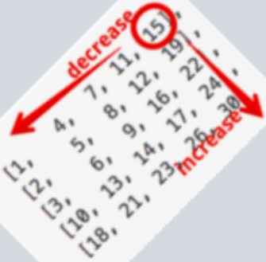
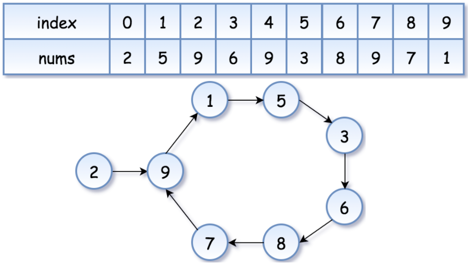
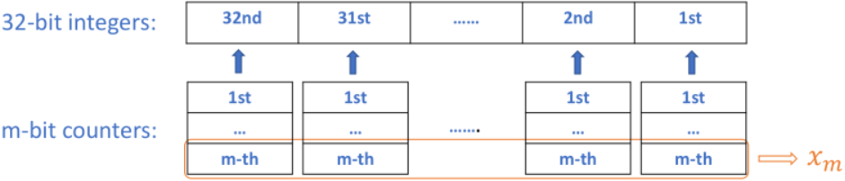
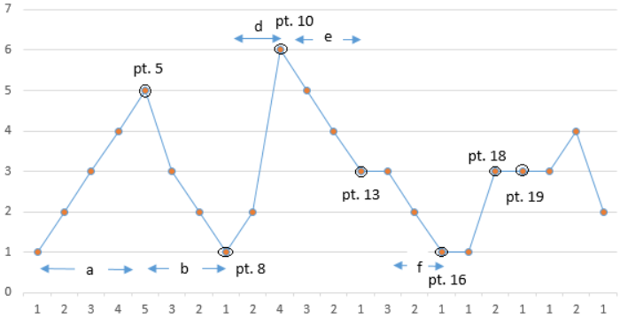

【面试重点复习】
4 5 10 11 22 25 32 33 41 42 44 72 73 81 84 85 87 89 99 123 128 134 135 136 137 164 174 191 215 218 222 229 239 240 260 264 282 287 300 309 1803 1815 1819 1825 1838 1847 1856 1857 1862 1872 1883 1896
1. 栈&队列
1.1. [42] Trapping Rain Water
题目
有一个数组表示方块的高度，计算这些方块最多能存储多少水，要求时间复杂度为O(n)，空间复杂度为O(1)

思路
单调栈，即栈中保存的都是单调的元素，若遇到不单调的元素，则需要进行处理
使用递减栈，记下一个入栈元素为
next- 当
next小于栈顶时直接入栈 - 当
next大于栈顶时，弹出当前栈顶记为cur，新的栈顶记为top。由于top和cur之间的元素都被cur入栈之前弹出了，所以它们比cur要低；而cur和next之间的元素没有将cur弹出，所以它们也比cur要低。因此cur位置储水的高度由top和next的更小值决定，将cur位置的储水量汇总到结果中 - 不断执行2.直至
next小于栈顶，然后将next入栈
- 当
代码
1class Solution {2public:3 int trap(vector<int>& height) {4 int ans = 0;5 stack<int> s;6 for (int i = 0; i < height.size(); ++i) {7 while (s.size() && height[i] >= height[s.top()]) {8 int cur = s.top();9 s.pop();10 if (s.empty())11 break;12 ans += (min(height[s.top()], height[i]) - height[cur]) * (i - s.top() - 1);13 }14 s.push(i);15 }16 return ans;17 }18};其它
1.2. [84] Largest Rectangle in Histogram
题目
有一个数组表示方块的高度，找出其中能围成的面积最大的矩形

思路
使用递增栈，记下一个入栈元素为next
- 当
next大于栈顶时直接入栈 - 当
next小于栈顶时，弹出当前栈顶记为cur，新的栈顶记为top。由于top和cur之间的元素都被cur入栈之前弹出了，所以它们比cur要高；而cur和next之间的元素没有将cur弹出，所以它们也比cur要高。因此top和next之间的元素可以组成高为cur的矩形，计算其面积并更新最大面积 - 不断执行2.直至
next大于栈顶，然后将next入栈
代码
xxxxxxxxxx181class Solution {2public:3 int largestRectangleArea(vector<int>& heights) {4 int n = heights.size(), ans = 0;5 heights.push_back(0);6 stack<int> s;7 s.push(-1);8 for (int i = 0; i <= n; ++i) {9 while (s.size() > 1 && heights[i] < heights[s.top()]) {10 int cur = s.top();11 s.pop();12 ans = max(ans, heights[cur] * (i - s.top() - 1));13 }14 s.push(i);15 }16 return ans;17 }18};1.3. [85] Maximal Rectangle
题目
有一个由0和1组成的矩阵，找出其中元素全部为1的最大矩形

思路
类似第84题寻找最大的矩形面积，按行遍历矩形，找出遍历到该行时底边在该行上的最大矩形面积并更新结果
代码
x1class Solution {2public:3 int maximalRectangle(vector<vector<char>>& matrix) {4 if (matrix.empty() || matrix[0].empty())5 return 0;6 int n = matrix.size(), m = matrix[0].size(), ans = 0;7 vector<int> height(m, 0);8 for (int i = 0; i < n; ++i) {9 for (int j = 0; j < m; ++j)10 height[j] = (matrix[i][j] == '1') ? height[j] + 1 : 0;11 ans = max(ans, largestRectangleArea(height));12 }13 return ans;14 }1516 int largestRectangleArea(vector<int>& heights) {17 int n = heights.size(), ans = 0;18 heights.push_back(0);19 stack<int> s;20 s.push(-1);21 for (int i = 0; i <= n; ++i) {22 while (s.size() > 1 && heights[i] < heights[s.top()]) {23 int cur = s.top();24 s.pop();25 ans = max(ans, heights[cur] * (--i - s.top()));26 }27 s.push(i);28 }29 return ans;30 }31};其它
1.4. [1856] Maximum Subarray Min-Product
题目
给定一个正整数数组，求其连续子数组min_product_sum的最大值。一个数组的min_product_sum是指用其最小值乘以其所有元素之和即min * sum
思路
考虑某个连续子数组的最小值为A[i]，要使其min_product_sum最大，则其所有元素之和要最大，又因为元素都是正整数，则其包含的元素越多越好。因此由A[i]往两边延伸，只要元素大于等于A[i]都包含进来，这样就能保证在最小值为A[i]的前提下元素最多。这就是递增栈的使用场景(递增栈和递减栈的区别需要仔细体会第42题和第84题)
代码
xxxxxxxxxx131class Solution:2 def maxSumMinProduct(self, nums: list[int]) -> int:3 ans, stack, pre_sum = 0, [], [0] * (len(nums) + 1)4 for i in range(len(nums)):5 pre_sum[i + 1] = pre_sum[i] + nums[i]6 for i in range(len(nums) + 1):7 # 使用递增栈8 while stack and (i == len(nums) or nums[i] < nums[stack[-1]]):9 cur = stack.pop()10 top = stack[-1] + 1 if stack else 011 ans = max(ans, nums[cur] * (pre_sum[i] - pre_sum[top]))12 stack.append(i)13 return ans % int(1e9 + 7)1.5. [239] Sliding Window Maximum
题目
给定一个数组和窗口大小k，求窗口滑动过程中的最大值数组
思路
- 维护一个在窗口范围内的索引队列，里面索引对应的数组元素大小是递减的，因为如果有两个索引
i < j且对应元素非递减num[i] <= num[j]，那么num[i]永远不可能是最大值 - 每次窗口往右滑动时，将队首超出窗口的索引弹出，且将队尾元素不大于当前元素的索引弹出
- 这样队首就一直保存着当前窗口的最大值
代码
xxxxxxxxxx171class Solution {2public:3 vector<int> maxSlidingWindow(vector<int>& nums, int k) {4 vector<int> ans;5 deque<int> dq;6 for (int i = 0; i < nums.size(); ++i) {7 if (dq.size() && dq.front() <= i - k)8 dq.pop_front();9 while (dq.size() && nums[i] >= nums[dq.back()])10 dq.pop_back();11 dq.push_back(i);12 if (i >= k - 1)13 ans.push_back(nums[dq.front()]);14 }15 return ans;16 }17};
2. 树&Trie
2.1. [99] Recover Binary Search Tree
题目
一棵BST中被交换了两个节点，请将该BST复原，要求时间复杂度为O(n)

思路
- 一开始总是想着根据局部父子3个节点的大小关系来找到被交换的节点，但有的时候树的局部总是满足
BST条件的，只是整体不满足 - 其实只需要进行一次中序遍历，将序列降至一维就能很快地找到失序的两个节点，把它俩记录下来最后交换回去即可
代码
xxxxxxxxxx281class TreeNode:2 def __init__(self, val=0, left=None, right=None):3 self.val = val4 self.left = left5 self.right = right678class Solution:9 def recoverTree(self, root: TreeNode) -> None:10 self.first = None11 self.second = None12 self.pre = TreeNode(-1 << 32)13 self.in_order(root)14 self.first.val, self.second.val = self.second.val, self.first.val1516 # 寻找中序遍历中顺序异常的节点17 def in_order(self, root):18 if root is None:19 return20 self.in_order(root.left)21 if root.val < self.pre.val:22 if self.first is None:23 self.first = self.pre24 # 不能写else，上一行已经改变first，需要重新判断25 if self.first is not None:26 self.second = root27 self.pre = root28 self.in_order(root.right)2.2. [1803] Count Pairs With XOR in a Range
题目
给定一个正整数数组A和两个界限low与high，计算数组中可以构成多少个数对(i, j)使得low ≤ A[i] ^ A[j] ≤ high
思路
将所有整数的二进制构造成一颗
Trie树，并记录每个节点包含的整数个数。在插入每个整数的过程中，计算已插入的整数可以与当前整数构成多少个满足题意的数对。具体来说，只需统计异或结果＜k的数对个数cnt[k]，那么满足题意的数对个数就为cnt[high+1] - cnt[low]假设要寻找与
n异或结果＜k的数对个数，遍历每位二进制，设n当前二进制为x- 如果
k当前二进制为1，那么结果需要加上x子树的整数个数(因为x ^ x = 0，子树中的整数一定小于k)，然后往1 - x子树继续遍历 - 如果
k当前二进制为0，那么只需往x子树继续遍历
- 如果
代码
xxxxxxxxxx401const int MAX_BIT = 15;2struct Trie {3 Trie* next[2];4 int cnt;5 Trie() : cnt(0) { next[0] = next[1] = nullptr; }6 void insert(int n) {7 Trie* node = this;8 for (int i = MAX_BIT - 1; i >= 0; --i) {9 bool c = n & (1 << i);10 if (!node->next[c])11 node->next[c] = new Trie();12 node = node->next[c];13 ++node->cnt;14 }15 }16 // 寻找与n异或结果小于x的对数17 int countPairs(int n, int k) {18 int ans = 0;19 Trie* node = this;20 for (int i = MAX_BIT - 1; i >= 0 && node; --i) {21 bool y = k & (1 << i), x = n & (1 << i);22 ans += y && node->next[x] ? node->next[x]->cnt : 0;23 node = node->next[y ^ x];24 }25 return ans;26 }27};2829class Solution {30public:31 int countPairs(vector<int>& nums, int low, int high) {32 Trie t;33 int ans = 0;34 for (auto n : nums) {35 ans += t.countPairs(n, high + 1) - t.countPairs(n, low);36 t.insert(n);37 }38 return ans;39 }40};
3. 图论
3.1. [1857] Largest Color Value in a Directed Graph
题目
一个有向图的所有顶点都被标记一种颜色，一条路径的颜色值是指该路径中出现次数最多的颜色的顶点数，求所有路径中的最大颜色值，如果存在环则返回-1
思路
由于是有向图，要使颜色值最大，则需要从入度为0的顶点出发，这就联想到了拓扑排序。记录每个顶点每种颜色出现的最大次数，按拓扑排序的顺序更新这些值，并记录全局最大值即最终结果
代码
xxxxxxxxxx361class Solution {2public:3 int largestPathValue(string colors, vector<vector<int>>& edges) {4 int n = colors.size();5 vector<vector<int>> G(n, vector<int>());6 vector<int> indegree(n, 0);7 // 拓扑排序BFS遍历图，记录到当前节点为止各种颜色在路径中出现的最大次数8 vector<vector<int>> cnt(n, vector<int>(26, 0));9 for (auto& e : edges) {10 G[e[0]].push_back(e[1]);11 ++indegree[e[1]];12 }13 queue<int> q;14 // 初始将所有入度为0的点入队15 for (int i = 0; i < n; ++i)16 if (indegree[i] == 0) {17 q.push(i);18 cnt[i][colors[i] - 'a'] = 1;19 }20 int ans = 1, visited = 0;21 // 拓扑排序22 while (q.size()) {23 auto cur = q.front();24 q.pop();25 ++visited;26 for (auto nei : G[cur]) {27 if (--indegree[nei] == 0)28 q.push(nei);29 for (int i = 0; i < 26; ++i)30 cnt[nei][i] = max(cnt[nei][i], cnt[cur][i] + (colors[nei] - 'a' == i));31 ans = max(ans, cnt[nei][colors[nei] - 'a']);32 }33 }34 return visited < n ? -1 : ans;35 }36};
4. 字符串
4.1. [5] Longest Palindromic Substring
题目
寻找字符串s的最长回文子串
思路
Manacher算法：O(n)
给
s的两端及每两个字符之间添加一个非法字符#得到ss，此时ss的长度必为奇数。设ss以i为中心的最长回文子串的最右端为r，记录len[i] = r - i，表示该最长回文子串在s中的长度。设遍历到位置i时，right为以[0, i)为中心的最长回文子串中最右端的位置，middle为该最长回文子串的中心：- 当
i ≤ right时，i在middle和right之间，取i关于middle对称的点j：当len[j] ≤ right - i时，以j为中心的最长回文子串在以middle为中心的最长回文子串的内部，由对称性有len[i] = len[j]；当len[j] ＞ right - i时，以i为中心的最长回文子串会延伸到right之外，需要从right + 1开始逐一匹配，并更新len[i]、middle和right - 当
i ＞ right时，以i为中心的最长回文子串还没开始匹配，需要从i + 1开始逐一匹配，并更新len[i]、middle和right
- 当
由于只需要遍历一遍字符串，因此时间复杂度为
O(n)
代码
xxxxxxxxxx271class Solution {2public:3 string longestPalindrome(string s) {4 string ss(2 * s.size() + 1, '#');5 for (int i = 0; i < s.size(); ++i)6 ss[2 * i + 1] = s[i];7 int *len = new int[ss.size()], middle = 0, right = 0;8 len[0] = 0;9 for (int i = 1; i < ss.size(); ++i) {10 len[i] = (i <= right) ? min(len[2 * middle - i], right - i) : 0;11 // 往外延伸12 for (int l = i - len[i] - 1, r = i + len[i] + 1; l >= 0 && r < ss.size() && ss[l] == ss[r]; --l, ++r)13 ++len[i];14 // 更新middle和right15 if (i + len[i] > right) {16 right = i + len[i];17 middle = i;18 }19 }20 int ans = 0;21 for (int i = 1; i < ss.size(); ++i)22 if (len[i] > len[ans])23 ans = i;24 // 注意ss是在每两个字符之间添加了#符号的25 return s.substr((ans - len[ans] + 1) / 2, len[ans]);26 }27};其它
- 确定回文串中心，再往外不断扩展，时间复杂度为
O(n) - 记
dp[i][j]表示从i到j是否构成回文串，dp[i][j]可由dp[i+1][j-1]得来，时间复杂度为O(n)
4.2. [44] Wildcard Matching
题目
给定字符串s和正则表达式p，判断s是否满足p。s只包含小写字母，p中还有特殊字符?和*
?表示匹配任意1个字符*表示匹配0个或任意个字符
思路
逐一匹配字符，遇到通配符*时记录s和p当前匹配到的位置(只需要记录当前最后一个通配符即可)，当无法匹配时回到记录的通配符位置，同时s的匹配位置后移一位表示通配符多匹配一个字符
代码
xxxxxxxxxx241class Solution {2public:3 bool isMatch(string s, string p) {4 int i = 0, j = 0, star_i = -1, star_j = -1;5 while (i < s.size()) {6 if (j < p.size() && (p[j] == '?' || p[j] == s[i]))7 // 精确匹配8 ++i, ++j;9 else if (j < p.size() && p[j] == '*')10 // 保存最近的一个*通配符，先匹配0个字符，后面回退的时候依次增加匹配字符11 star_i = i + 1, star_j = ++j;12 else if (star_j != -1)13 // 未匹配(包括p已经到末尾但s还有未匹配字符)有通配符，回退到最近的*通配符14 i = star_i++, j = star_j;15 else16 // 未匹配(包括p已经到末尾但s还有未匹配字符)也没有通配符，匹配失败17 return false;18 }19 // s已到末尾p可能还有未匹配字符，要匹配剩下的必须是*通配符20 while (j < p.size() && p[j] == '*')21 ++j;22 return j == p.size();23 }24};其它
类似于第10题，同样可以用动态规划求解
5. 查找&排序
5.1. [4] Median of Two Sorted Arrays
题目
找出升序排列的两个数组nums1和nums2的中位数(总长度为偶数时取中间两个数的平均值)，要求时间复杂度为O(log(m+n))，其中m和n分别为nums1和nums2的长度
思路
- 看到
log复杂度联想到二分查找 - 假设中位数将
nums1和nums2分别划分为左右两半部分，nums1和nums2的左半部分长度分别为i和j，则i + j = (m + n) / 2(总长度为奇数时)，j = (m + n) / 2 - i，因此可以二分查找i
代码
xxxxxxxxxx281class Solution {2public:3 double findMedianSortedArrays(vector<int>& nums1, vector<int>& nums2) {4 // 短的左半部分有i个元素，长的左半部分有j个元素5 if (nums1.size() > nums2.size())6 swap(nums1, nums2);7 // i+j=(m+n+1)/2，故j=(m+n+1)/2-i，二分查找i8 int m = nums1.size(), n = nums2.size();9 int l = 0, r = m, i, j;10 while (l <= r) {11 i = (l + r) / 2, j = (m + n + 1) / 2 - i;12 if (i != 0 && j != n && nums1[i - 1] > nums2[j])13 r = i - 1;14 else if (i != m && j != 0 && nums2[j - 1] > nums1[i])15 l = i + 1;16 else {17 // 找到了切分点，分总元素个数奇偶情况18 int one = (i == 0) ? nums2[j - 1] : ((j == 0) ? nums1[i - 1] : max(nums1[i - 1], nums2[j - 1]));19 // 这个判断不能放在下一行的后面，因为总共只有1个数时j会越界！！！20 if ((m + n) % 2 == 1)21 return one;22 int two = (i == m) ? nums2[j] : ((j == n) ? nums1[i] : min(nums1[i], nums2[j]));23 return (one + two) / 2.0;24 }25 }26 return 0;27 }28};5.2. [33] Search in Rotated Sorted Array
题目
元素各不相同的升序数组被循环右移了k个位置，要求在O(logn)时间内找出元素在数组中的索引，不存在则返回-1
思路
参考二分查找顺序数组的思路，只不过在判断该往左半部分还是右半部分中查找时的逻辑要复杂一些
代码
xxxxxxxxxx121class Solution:2 def search(self, nums: list[int], target: int) -> int:3 left, right = 0, len(nums) - 14 while left <= right:5 mid = (left + right) // 26 if nums[mid] == target:7 return mid8 if target < nums[mid] < nums[right] or nums[mid] < nums[right] < target or nums[right] < target < nums[mid]:9 right = mid - 110 else:11 left = mid + 112 return -15.3. [41] First Missing Positive
题目
有一个未排序的整数数组，找出最小的没有出现的正整数，要求时间复杂度为O(n)，空间复杂度为O(1)
思路
遍历数组，不断将当前元素放回至其正确的位置(如5的正确位置为4)，最后再遍历一次，哪个位置的数不对应，就是没有出现的最小正整数
代码
xxxxxxxxxx131class Solution {2public:3 int firstMissingPositive(vector<int>& nums) {4 int n = nums.size();5 for (int i = 0; i < n; ++i)6 while (nums[i] > 0 && nums[i] <= n && nums[i] != nums[nums[i] - 1])7 swap(nums[i], nums[nums[i] - 1]);8 for (int i = 0; i < n; ++i)9 if (nums[i] != i + 1)10 return i + 1;11 return n + 1;12 }13};5.4. [81] Search in Rotated Sorted Array II
题目
类似第33题，只是被右移的数组中可能含有重复的元素
思路
与第33题相比，由于数组首尾可能包含相同的元素，因此无法通过元素大小判断应该往左半部分还是右半部分进行查找
先将尾部中与首部相同的元素去除(只有第一次查找的时候才有可能出现首尾元素相同，缩小范围进一步查找的时候不可能出现)，再根据
target与arr[mid]的关系确定往哪半部分继续查找- 右移之后的数组可以分为两组，记第一组为
F，第二组为S(有可能为空)。与首元素比较大小，分别判断target和arr[mid]位于F还是S - 若
target和arr[mid]位于不同组，则可以直接判断往哪半部分深入 - 若
target和arr[mid]位于相同组，则需要进一步根据target和arr[mid]的大小判断往哪半部分深入(和有序数组的二分查找一样)
- 右移之后的数组可以分为两组，记第一组为
第33题的时间复杂度为
O(logn)，而这里首位有可能存在大量的重复元素，最坏情况下时间复杂度为O(n)
代码
xxxxxxxxxx211class Solution {2public:3 bool search(vector<int>& nums, int target) {4 int left = 0, right = nums.size() - 1, mid;5 while (right > 0 && nums[right] == nums[0])6 --right;7 while (left <= right) {8 mid = (left + right) / 2;9 if (nums[mid] == target)10 return true;11 bool target_in_left = target >= nums[left];12 bool mid_in_left = nums[mid] >= nums[left];13 // target和mid在不同的部分14 if (target_in_left ^ mid_in_left)15 target_in_left ? right = mid - 1 : left = mid + 1;16 else17 nums[mid] < target ? left = mid + 1 : right = mid - 1;18 }19 return false;20 }21};5.5. [128] Longest Consecutive Sequence
题目
有一个整数数组，求其中能组成最长连续数字序列的长度。如[4,8,3,1,7,2]最长连续数字序列为[1,2,3,4]，长度为4。要求时间复杂度为O(n)
思路
哈希表的查找时间为O(1)，先寻找最长连续数字序列的起点，再往后不断延伸序列，记录最大的序列长度
代码
xxxxxxxxxx121class Solution:2 def longestConsecutive(self, nums: list[int]) -> int:3 nums = set(nums)4 ans = 05 for n in nums:6 if n - 1 not in nums:7 length = 18 while n + 1 in nums:9 length += 110 n += 111 ans = max(ans, length)12 return ans5.6. [164] Maximum Gap
题目
有一个未排序的整数数组，找出其排序之后相邻两个数的最大差值。要求时间复杂度不超过O(n)，空间复杂度也不超过O(n)
思路
先找出最大值max和最小值min，由于n个元素共存在n-1个间隔，因此最大间隔一定不小于avg_gap = ceil((max - min) / (n - 1))
- 建立
n - 1个桶，每个桶的长度为avg_gap，第1个桶的起始位置为min - 将所有元素都丢进对应的桶中，但只需要记录每个桶的最大值和最小值
- 按顺序遍历桶，求出桶间元素的间隔，记录最大间隔
代码
xxxxxxxxxx201class Solution:2 def maximumGap(self, nums: list[int]) -> int:3 n, min_num, max_num = len(nums), min(nums), max(nums)4 if n == 1 or min_num == max_num:5 return 06 bucket = [[int(1e9), -1] for _ in range(n)]7 avg_gap = int((max_num - min_num) // (n - 1))8 if (max_num - min_num) % (n - 1) != 0:9 avg_gap += 110 for x in nums:11 no = (x - min_num) // avg_gap12 bucket[no][0] = min(bucket[no][0], x)13 bucket[no][1] = max(bucket[no][1], x)14 bucket[-1] = [max_num, min_num]15 pre, ans = bucket[-1], 016 for pair in bucket:17 if pair[1] != -1:18 ans = max(ans, pair[0] - pre[1])19 pre = pair20 return ans5.7. [215] Kth Largest Element in an Array
题目
找出数组中第k大的数
思路
借鉴快速排序的思想，不断地选取枢轴进行划分，直到选中的枢轴恰好为第k大的数
- 由于划分枢轴之后只需要在其中的一半递归地继续划分，而另一半可以不用管，因此其时间复杂度
T(n) = T(2/n) + O(n)，得T(n) = O(n) - 为了不受恶意输入的影响，使得最坏情况下时间复杂度变为
O(n^2)，可以先对数组进行随机打乱
代码
xxxxxxxxxx321class Solution:2 def findKthLargest(self, nums: list[int], k: int) -> int:3 def shuffle(arr: list[int]) -> None:4 for i in range(n):5 j = random.randint(0, n - 1)6 arr[i], arr[j] = arr[j], arr[i]78 def partition(left: int, right: int) -> int:9 # 邓俊辉老师的写法10 pivot = nums[left]11 while left < right:12 while left < right and pivot >= nums[right]:13 right -= 114 nums[left] = nums[right]15 while left < right and nums[left] >= pivot:16 left += 117 nums[right] = nums[left]18 nums[left] = pivot19 return left2021 n = len(nums)22 shuffle(nums)23 left, right = 0, n - 124 while left < right:25 pivot = partition(left, right)26 if pivot == k - 1:27 break28 if pivot < k - 1:29 left = pivot + 130 else:31 right = pivot - 132 return nums[k - 1]5.8. [240] Search a 2D Matrix II
题目
有一个二维数组，每一行和每一列的元素都是排好序的，查询数组中是否包含某个元素
思路
从右上角(也可以从左下角)出发，如果目标元素小于当前元素则往左移动一格，如果目标元素大于当前元素则往右移动一格，直至搜索到目标元素，或越界表示不存在。这其实类似于二叉搜索树的查找，如下图所示

代码
xxxxxxxxxx121class Solution:2 def searchMatrix(self, matrix: list[list[int]], target: int) -> bool:3 m, n = len(matrix), len(matrix[0])4 row, col = 0, n - 15 while row < m and col >= 0:6 if target == matrix[row][col]:7 return True8 if target < matrix[row][col]:9 col -= 110 else:11 row += 112 return False5.9. [222] Count Complete Tree Nodes
题目
统计一颗完全二叉树的节点个数，要求时间复杂度小于O(n)
思路
- 因为题目给的是完全二叉树，如果使用普通的遍历方式去统计的话就没有用到它的性质了
- 从根节点一直往左直到叶子节点
X，则X一定处于完全二叉树的最底层 - 假设层数从0开始，节点编号从1开始，
X位于第h层，则节点总数在范围内，可以通过二分查找寻找最终的结果 - 那么如何判断是否含有个节点呢？我们发现
左孩子 = 节点 * 2、右孩子 = 节点 * 2 + 1，在二进制上的形式就是左移一位，最后一位分别是0和1，因此可以根据二进制位来判断访问哪个子节点。第k个节点在第h层，二进制有h + 1位，第h层的节点最高位都是1，其余h位表示了从根节点到当前节点的路径
代码
xxxxxxxxxx301class TreeNode:2 def __init__(self, val=0, left=None, right=None):3 self.val = val4 self.left = left5 self.right = right678class Solution:9 def countNodes(self, root: TreeNode) -> int:10 def exist(num: int) -> bool:11 cur, mask = root, 1 << (h - 1)12 for _ in range(h):13 cur = cur.right if num & mask else cur.left14 mask >>= 115 return cur1617 cur, h = root, -118 while cur:19 cur = cur.left20 h += 121 if h < 1:22 return h + 123 left, right = 1 << h, (1 << (h + 1)) - 124 while left <= right:25 mid = (left + right) // 226 if exist(mid):27 left = mid + 128 else:29 right = mid - 130 return right5.10. [300] Longest Increasing Subsequence
题目
求一个数组的最长上升子序列的长度
思路
为了使子序列尽可能长，那么最后序列的最后一个数要尽可能小。维护一个数组dp，表示长度为i的最长上升子序列最后一个数的最小值，然后遍历数组
- 如果当前元素A大于dp[-1]，则直接将A插入到dp最后面，这样dp的长度就增加了1
- 二分法查找到满足dp[i-1] < A < dp[i]的位置，设置dp[i] = A
最后的结果就是dp的长度
代码
xxxxxxxxxx161class Solution:2 def lengthOfLIS(self, nums: list[int]) -> int:3 dp = []4 for n in nums:5 if not dp or n > dp[-1]:6 dp.append(n)7 else:8 left, right = 0, len(dp) - 19 while left <= right:10 mid = (left + right) // 211 if n <= dp[mid]:12 right = mid - 113 else:14 left = mid + 115 dp[left] = n16 return len(dp)其它
该算法时间复杂度为O(nlogn)。可以用dp[i]表示以arr[i]为结尾的最长上升子序列的长度，时间复杂度为O(n^2)
5.11. [offer-52]数组中的逆序对
题目
在数组中的两个数字，如果前面一个数字大于后面的数字，则这两个数字组成一个逆序对。输入一个数组，求出这个数组中的逆序对的总数
思路
使用归并排序排序数组，在合并阶段，如果下一个元素是来自后半段的第一个元素，则前半段的剩余元素与该元素组成逆序对，加上这些元素的个数
代码
xxxxxxxxxx271class Solution:2 def reversePairs(self, nums: list[int]) -> int:3 def merge(left: int, mid: int, right: int):4 nonlocal ans5 tmp = nums[left:mid + 1]6 i, j, k = 0, mid + 1, left7 while i < len(tmp):8 if j > right or tmp[i] <= nums[j]:9 nums[k] = tmp[i]10 i += 111 else:12 nums[k] = nums[j]13 j += 114 ans = ans + len(tmp) - i15 k += 11617 def mergeSort(left: int, right: int):18 if left == right:19 return20 mid = (left + right) // 221 mergeSort(left, mid)22 mergeSort(mid + 1, right)23 merge(left, mid, right)2425 ans = 026 mergeSort(0, len(nums) - 1)27 return ans
6. 递归
6.1. [22] Generate Parentheses
题目
产生n对括号组成的合法字符串
思路
记第一个左括号及与之对应的右括号组成第1对括号，假设第1对括号之间有a对括号，则第1对括号后面有n - 1 - a对括号，遍历a将结果组合即可
代码
xxxxxxxxxx141class Solution {2public:3 vector<string> generateParenthesis(int n) {4 vector<string> ans;5 if (n == 0)6 ans.push_back("");7 else8 for (int i = 0; i < n; ++i)9 for (auto left : generateParenthesis(i))10 for (auto right : generateParenthesis(n - i - 1))11 ans.push_back("(" + left + ")" + right);12 return ans;13 }14};6.2. [25] Reverse Nodes in k-Group
题目
将一个链表按每k个元素进行逆置，若剩余元素不足k个则保留原来的顺序
思路
- 设置两个指针不断地逆置方向，每逆置
k次就进行一次调整(两组首尾相接处)，这样可行但代码写起来比较复杂 - 用递归的思想，将从第
k + 1个位置开始的链表递归地完成逆置，然后只要调整前k个元素即可
代码
xxxxxxxxxx221class Solution {2public:3 ListNode* reverseKGroup(ListNode* head, int k) {4 ListNode* cur = head;5 int cnt = 0;6 while (cur != NULL && cnt != k) {7 cur = cur->next;8 ++cnt;9 }10 if (cnt == k) {11 cur = reverseKGroup(cur, k);12 while (--cnt >= 0) {13 ListNode* tmp = head->next;14 head->next = cur;15 cur = head;16 head = tmp;17 }18 head = cur;19 }20 return head;21 }22};6.3. [1815] Maximum Number of Groups Getting Fresh Donuts
题目
面包店每次只做一批k个面包，只有当这一批面包卖完之后才会做下一批。有一个数组代表每支队伍的人数，调整队伍到达面包店的顺序，使得不会吃到上一批剩余面包(即吃到的面包都是来了之后现做的)的队伍数最多
思路
- 能被
k整除的队伍优先 - 模
k余数相加等于k的2支队伍一起 - 模
k余数相加等于k的3支队伍一起...但从3支队伍开始就不太好枚举了，因此通过DFS搜索。为了减少重复计算，记录已经计算过的状态，由于状态是一个数组(而不是整数)，因此使用哈希表存储
代码
xxxxxxxxxx351class Solution {2public:3 int maxHappyGroups(int batchSize, vector<int>& groups) {4 int ans = 0, N = batchSize;5 vector<int> cnt(N);6 for (auto group : groups)7 ++cnt[group % N];8 ans += cnt[0];9 if (N % 2 == 0) {10 ans += cnt[N / 2] / 2;11 cnt[N / 2] %= 2;12 }13 for (int i = 1; i < (N + 1) / 2; ++i) {14 int tmp = min(cnt[i], cnt[N - i]);15 cnt[i] -= tmp;16 cnt[N - i] -= tmp;17 ans += tmp;18 }19 map<vector<int>, int> memo;20 return ans + dfs(cnt, 0, memo);21 }2223 int dfs(vector<int>& cnt, int mod, map<vector<int>, int>& memo) {24 if (memo.count(cnt))25 return memo[cnt];26 int ans = 0, N = cnt.size();27 for (int i = 1; i < N; ++i)28 if (cnt[i]) {29 --cnt[i];30 ans = max(ans, (mod == 0) + dfs(cnt, (mod + i) % N, memo));31 ++cnt[i];32 }33 return memo[cnt] = ans;34 }35};6.4. [1896] Minimum Cost to Change the Final Value of Expression
题目
给定一个&和|运算的表达式字符串，字符串只含&、|、0、1、(和)，有括号先算括号内的，没有括号则从左往右的顺序计算。为了使最终的结果与现在的相反，可以做如下两种操作：
- 把
0变成1，或把1变成0 - 把
&变成|，或把|变成&
求最少需要变换多少个字符才能使结果与现在的相反
思路
计算表达式的结果以及将结果反转至少需要操作的次数
(val, ans)，而一个表达式的(val, ans)可以递归地通过计算最后一个运算符连接的两个子表达式的(val, ans)得到考虑最后一个运算符
?，其连接的两个子表达式有可能是...?x和...?(...)两种情况。第一种情况可以直接将x和前面的...取出来，而第二种情况为了获得(的位置，需要对每对括号的位置进行预处理记录下来。而知道了括号对的位置也就很好地处理(...)这种特殊情况了得到子表达式的
(val, ans)之后，要如何得到当前表达式的(val, ans)呢？将所有可能情况列举出来xxxxxxxxxx81if val1 == 0 and val2 == 0 and op == "&": return (0, 1 + min(ans1, ans2))2if val1 == 0 and val2 == 1 and op == "&": return (0, 1)3if val1 == 1 and val2 == 1 and op == "&": return (1, min(ans1, ans2))4if val1 == 1 and val2 == 0 and op == "&": return (0, 1)5if val1 == 0 and val2 == 0 and op == "|": return (0, min(ans1, ans2))6if val1 == 0 and val2 == 1 and op == "|": return (1, 1)7if val1 == 1 and val2 == 1 and op == "|": return (1, 1 + min(ans1, ans2))8if val1 == 1 and val2 == 0 and op == "|": return (1, 1)可以发现，当
val1和val2不同时ans一定为0，当出现0 & 0或1 | 1的情况时ans = min(ans1, ans2) + 1，其他情况ans = min(ans1, ans2)要注意这里递归是从后往前进行的，因为这样递归到最里层时其实是前面的部分先进行计算的，符合运算法则
代码
xxxxxxxxxx271class Solution:2 def minOperationsToFlip(self, expression: str) -> int:3 def get_bracket():4 stack = []5 for i, c in enumerate(expression):6 if c == '(':7 stack.append(i)8 elif c == ')':9 pairs[i] = stack.pop()1011 def dfs(left: int, right: int) -> (int, int):12 if left == right:13 return int(expression[left]), 114 # 因为计算要从左往右，所以递归要从右往左15 mid = pairs.get(right, right)16 if mid == left:17 return dfs(left + 1, right - 1)18 val1, ans1 = dfs(left, mid - 2)19 val2, ans2 = dfs(mid, right)20 op = expression[mid - 1]21 ans = 1 if val1 + val2 == 1 else min(ans1, ans2) + (val1 ^ (op == '&'))22 return val1 & val2 if op == '&' else val1 | val2, ans2324 n = len(expression)25 pairs = {}26 get_bracket()27 return dfs(0, n - 1)[1]其它
模仿中缀表达式求值，可以借助栈从后往前一步步递推地计算
- 遇到运算符和
(时直接入栈 - 遇到
)时将(x)变成x - 遇到数字时判断栈顶是否为运算符，是则求值再将结果入栈，否则直接入栈
保存的数据和计算过程和上面的方法一样
xxxxxxxxxx191class Solution:2 def minOperationsToFlip(self, expression: str) -> int:3 stack = []4 for c in expression:5 if c in ['&', '|', '(']:6 stack.append(c)7 else:8 if c == ')':9 val2, ans2 = stack.pop()10 stack.pop()11 else:12 val2, ans2 = int(c), 113 if len(stack) and stack[-1] in ['&', '|']:14 op = stack.pop()15 val1, ans1 = stack.pop()16 ans2 = 1 if val1 + val2 == 1 else min(ans1, ans2) + (val1 ^ (op == '&'))17 val2 = val1 & val2 if op == '&' else val1 | val218 stack.append((val2, ans2))19 return stack[0][1]6.5. [282] Expression Add Operators
题目
有一个数字字符串和一个目标值，在字符串中间添加+、-和*，使得表达式的结果等于目标值
思路
遍历字符串中每个数字，有以下4种选择：
- 继续往后合并数字，变成一个更大的操作数
- 在前面添加
+，表达式的结果加上当前的数字 - 在前面添加
-，表达式的结果减去当前的数字 - 在前面添加
*，由于相比于+和-，*的计算优先级更高，因此要将前一个操作数从结果中移除，并乘上当前操作数，然后汇总到结果中去
还有许多实现的细节需要注意，具体见代码注释
代码
xxxxxxxxxx261class Solution:2 def addOperators(self, num: str, target: int) -> list[str]:3 def dfs(k: int, pre: int, cur: int, total: int, one: str):4 if k == n:5 # cur必须为0，否则还在试图合并下一个数，cur并未参数结果的计算6 if total == target and cur == 0:7 # 要去除第一个数前面的+8 ans.append(one[1:])9 return10 cur = cur * 10 + int(num[k])11 # 以0开头的数不能继续往后合并12 if cur:13 # 1. cur继续合并后面的数14 dfs(k + 1, pre, cur, total, one)15 # 2. cur前面是+16 dfs(k + 1, cur, 0, total + cur, one + '+' + str(cur))17 # 第一个数的结果必须是'0+cur'，因此cur前面只能是+18 if one:19 # 3. cur前面是-20 dfs(k + 1, -cur, 0, total - cur, one + '-' + str(cur))21 # 4. cur前面是*，需要消除pre对total的影响22 dfs(k + 1, pre * cur, 0, total - pre + pre * cur, one + '*' + str(cur))2324 n, ans = len(num), []25 dfs(0, 0, 0, 0, '')26 return ans
7. DP
7.1. [10] Regular Expression Matching
题目
给定字符串s和正则表达式p，判断s是否满足p。s只包含小写字母，p中还有特殊字符.和*，但每个*前面至少会有1个字母
.表示匹配任意1个字符*表示匹配0个或任意个前导字符
思路
很明显可以一个个字符进行匹配，不好搞的是
*，需要用DFS依次试探任意个字符，但直接DFS肯定超时。DFS超时一般都是因为存在大量的重复计算，因此可以转化为记忆DFS或DP设
dp[i][j]表示s的前i个字符是否匹配p的前j个字符，要使其匹配：- 当
p[j-1] != *时，s[i-1]和p[j-1]必须匹配 - 当
p[j-1] == *时，这个*可以匹配0次即dp[i][j-2]，也可以匹配多次即s[i-1]和p[j-2]必须匹配
- 当
代码
xxxxxxxxxx231class Solution {2public:3 bool isMatch(string s, string p) {4 bool dp[25][35] = { false };5 // i==0时只有全是通配符的才匹配6 dp[0][0] = true;7 for (int j = 2; j <= p.size(); j += 2)8 dp[0][j] = dp[0][j - 2] && p[j - 1] == '*';9 // j==0时只有i==0才匹配(上述已处理)10 // j==1时只有i==1且两个字符匹配时才匹配11 dp[1][1] = p[0] == '.' || p[0] == s[0];12 for (int i = 1; i <= s.size(); ++i)13 for (int j = 2; j <= p.size(); ++j) {14 if (p[j - 1] != '*')15 // 只匹配一个字符16 dp[i][j] = dp[i - 1][j - 1] && (p[j - 1] == '.' || p[j - 1] == s[i - 1]);17 else18 // 通配符19 dp[i][j] = dp[i][j - 2] || (dp[i - 1][j] && (p[j - 2] == '.' || p[j - 2] == s[i - 1]));20 }21 return dp[s.size()][p.size()];22 }23};7.2. [32] Longest Valid Parentheses
题目
有一个由(和)组成的字符串s，找出其中合法括号子串的最大长度
思路
设dp[i]表示以s[i]为结尾的合法括号子串的最大长度
- 当
s[i] == '('时，dp[i] = 0 - 当
s[i] == ')'且s[i-1] == '('时，dp[i] = dp[i-2] + 2 - 当
s[i] == ')'且s[i-1] != '('时，找到s[i-dp[i-1]-1]即与之匹配的位置，如果其为(则可匹配，记得还要加上再往前一个位置的dp[i-dp[i-1]-2]
代码
xxxxxxxxxx151class Solution {2public:3 int longestValidParentheses(string s) {4 int *dp = new int[s.size()](), ans = 0;5 for (int i = 1; i < s.size(); ++i)6 if (s[i] == ')') {7 if (s[i - 1] == '(')8 dp[i] = (i > 1 ? dp[i - 2] : 0) + 2;9 else if (i - dp[i - 1] > 0 && s[i - dp[i - 1] - 1] == '(')10 dp[i] = dp[i - 1] + 2 + (i - dp[i - 1] > 1 ? dp[i - dp[i - 1] - 2] : 0);11 ans = max(ans, dp[i]);12 }13 return ans;14 }15};其它
也可用计数的方法，记录(和)的个数，若相等则找到一个合法子串，若(的个数小于)则必定非法，使用两个指针指定当前子串，从左往右和从右往左依次扫描一遍并记录最大长度
xxxxxxxxxx241class Solution {2public:3 int longestValidParentheses(string s) {4 int start = 0, end = 0, n = s.size(), left = 0, right = 0, ans = 0;5 while (end < n) {6 s[end] == '(' ? ++left : ++right;7 ++end;8 if (left == right)9 ans = max(ans, end - start);10 else if (left < right)11 left = right = 0, start = end;12 }13 start = end = n - 1, left = right = 0;14 while (start >= 0) {15 s[start] == '(' ? ++left : ++right;16 --start;17 if (left == right)18 ans = max(ans, end - start);19 else if (left > right)20 left = right = 0, end = start;21 }22 return ans;23 }24};7.3. [72] Edit Distance
题目
给定两个字符串，求将一个字符串s转化为另一个字符串t需要操作的最少次数，操作有以下3种：
- 插入一个字符
- 删除一个字符
- 替换一个字符
思路
不要局限在考虑在哪个位置插入、删除或替换，设dp[i][j]表示s的前i个字符转化为t的前j个字符需要操作的最少次数
- 当
s[i] == t[j]时，dp[i][j] = dp[i-1][j-1] - 当
s[i] != t[j]时，dp[i][j]可由dp[i-1][j]插入一个字符、可由dp[i][j-1]插入一个字符、或由dp[i-1][j-1]替换一个字符得来，取其中的最小值
代码
xxxxxxxxxx241class Solution {2public:3 int minDistance(string word1, string word2) {4 int n = word1.size(), m = word2.size();5 vector<int> dp(m + 1, 0);6 for (int i = 1; i <= m; ++i)7 // 初始值dp[0][i]=i8 dp[i] = i;9 for (int i = 1; i <= n; ++i) {10 int pre = dp[0];11 // 初始值dp[i][0]=i12 dp[0] = i;13 for (int j = 1; j <= m; ++j) {14 int cur = dp[j];15 if (word1[i - 1] == word2[j - 1])16 dp[j] = pre;17 else18 dp[j] = min(min(pre, cur), dp[j - 1]) + 1;19 pre = cur;20 }21 }22 return dp[m];23 }24};7.4. [85] Maximal Rectangle
题目
有一个由0和1组成的矩阵，找出其中元素全部为1的最大矩形
思路
遍历每一元素，遍历到第i行第j列时，计算以元素(i,j)为右下角的最大矩形面积并更新结果。期间记录3个数组：height表示该列向上移动包含1的最大高度即矩形的高，left表示矩形的左边界，right表示矩形的右边界，left和right共同决定了矩形的宽
- 如果
arr[i][j] == 1，height[i][j] = height[i-1][j] + 1，否则height[i][j] = 0 - 记录该行向左移动包含1的最左边位置
cur_left，left[i][j]由cur_left和left[i-1][j]共同决定 right[i][j]的更新规则同理
代码
xxxxxxxxxx341class Solution {2public:3 int maximalRectangle(vector<vector<char>>& matrix) {4 if (matrix.empty() || matrix[0].empty())5 return 0;6 int n = matrix.size(), m = matrix[0].size(), ans = 0;7 vector<int> height(m, 0), left(m, 0), right(m, m - 1);8 for (int i = 0; i < n; ++i) {9 int cur_left = 0, cur_right = m - 1;10 for (int j = 0; j < m; ++j) {11 if (matrix[i][j] == '1') {12 ++height[j];13 left[j] = max(left[j], cur_left);14 } else {15 height[j] = 0;16 cur_left = j + 1;17 // 复原left，以便下一行left的计算，同时因为height为0了所以不影响面积的计算18 left[j] = 0;19 }20 }21 for (int j = m - 1; j >= 0; --j) {22 if (matrix[i][j] == '1')23 right[j] = min(right[j], cur_right);24 else {25 cur_right = j - 1;26 // 同样，复原right27 right[j] = m - 1;28 }29 ans = max(ans, (right[j] - left[j] + 1) * height[j]);30 }31 }32 return ans;33 }34};其它
7.5. [87] Scramble String
题目
有一种针对字符串s的操作A过程如下：
- 如果
s的长度大于1，则将s切分为两个非空子串x和y，随机选择是否交换x和y的顺序，并且对x和y也递归地做A操作 - 如果
s的长度等于1，则停止操作
给定两个字符串s和t，判断s和t是否可由A操作互相得到
思路
按照
A操作的思路，对每一个切分点都做一次尝试，将s切分为s1和s2、t切分为t1和t2，递归地判断两对子串是否可由A操作互相得到如果直接递归计算的话会存在大量重复的计算，因此可以使用记忆数组保存已经做过的计算
设
mem[i][j][k]表示s起点为i长度为k的子串和t起点为j长度为k的子串是否可由A操作互相得到，1表示可以、-1表示不可以、0表示还不确定自上而下的记忆可以换成自下而上的DP
代码
xxxxxxxxxx201class Solution {2public:3 int mem[31][31][31] = { 0 };4 bool isScramble(string s1, string s2) { return dfs(s1, s2, 0, 0, s1.size()); }56 bool dfs(string s1, string s2, int l1, int l2, int len) {7 if (mem[l1][l2][len])8 return mem[l1][l2][len] == 1;9 if (len == 1)10 return s1[l1] == s2[l2];11 for (int i = 1; i < len; ++i)12 if ((dfs(s1, s2, l1, l2, i) && dfs(s1, s2, l1 + i, l2 + i, len - i))13 || (dfs(s1, s2, l1, l2 + len - i, i) && dfs(s1, s2, l1 + i, l2, len - i))) {14 mem[l1][l2][len] = 1;15 return true;16 }17 mem[l1][l2][len] = -1;18 return false;19 }20};7.6. [123] Best Time to Buy and Sell Stock III
题目
有一个数组表示每天股票的售价，你可以在某天买入股票，然后在另一天卖出，计算能获得的最大利润。有几个要求：
- 不能在同一天买入和卖出
- 最多交易2笔
- 买入之前必须将之前的卖出
思路
记
buy1[i]、sell1[i]、buy2[i]、sell2[i]分别表示第i天买入第1笔时、卖出第1笔时、买入第2笔时、卖出第2笔时的最大利润。状态转移方程如下由于是最多交易2笔而不是必须交易2笔，因此可以允许在同一天买入和卖出，因为这样的交易不会影响最终的利润。状态可以简化为
初始值，考虑第0天的情况，买入第1笔
buy1 = -prices[0]，再卖出第1笔sell1 = 0，由于允许交易多笔而不影响结果，同理可以计算第0天buy2 = -prices[0]和sell2 = 0。最终输出答案为sell2，卖出多笔的利润不会比卖出更少笔的利润低
代码
xxxxxxxxxx91class Solution:2 def maxProfit(self, prices: list[int]) -> int:3 buy1, sell1, buy2, sell2 = -prices[0], 0, -prices[0], 04 for p in prices[1:]:5 buy1 = max(buy1, -p)6 sell1 = max(sell1, buy1 + p)7 buy2 = max(buy2, sell1 - p)8 sell2 = max(sell2, buy2 + p)9 return sell2其它
这题的状态设计不好想，若扩展至一般情况：最多只能交易k笔，可以设dp[i][j]表示第i天交易进行至j状态时的最大利润(j取0到2k - 1，表示第j / 2笔交易，j%2 == 0表示买入，j%2 == 1表示卖出)，状态转移方程类似，也可简化只保留j维度
7.7. [174] Dungeon Game
题目
有一个矩阵，里面的值表示恢复或消耗的血量，当血量少于1时立即死亡。从左上角出发往右或往下移动到达右下角，求最初的血量至少要为多少才不会死亡
思路
- 很容易想到用动态规划，但是转移方程不太好想。假设
dp[i][j]表示到达位置(i, j)时需要的最少血量，由于需要记录过程中每条路径血量的最小值与总和，因此无法单独通过dp进行转移 - 举个一维的简单例子，假如血量数组为
[-4,5,-3,1,-2]，计算得血量总和为[-4,1,-2,-1,-3]、dp = [5,5,5,5,5]，所需最少血量为5，是由第一个-4决定的 - 为了能够有效转移，定义
dp[i][j]为从(i, j)出发到达终点所需的最少血量，从后往前转移，dp[i][j]可由min(dp[i][j+1], dp[i+1][j]) - A[i][j]得到，若其为负数则直接置为1即可 - 还是上面的例子，计算得
dp = [5,1,5,2,3]，结果即为dp[0] = 5
代码
xxxxxxxxxx101class Solution:2 def calculateMinimumHP(self, dungeon: list[list[int]]) -> int:3 m, n, MAX_HP = len(dungeon), len(dungeon[0]), 1001 * 200 * 2004 dp1, dp2 = [MAX_HP for _ in range(n)], [0 for _ in range(n)]5 dp1[n - 1] = 16 for i in range(m - 1, -1, -1):7 for j in range(n - 1, -1, -1):8 dp2[j] = max(min(dp1[j], dp2[j + 1] if j < n - 1 else MAX_HP) - dungeon[i][j], 1)9 dp1, dp2 = dp2, dp110 return dp1[0]7.8. [1872] Stone Game VIII
题目
n堆石头排成一排，每堆石头都有一个分数，A和B在玩一个游戏，由A先操作，每次操作如下：
- 将前
k(k > 1)堆石头合并为一堆，其分数等于所有合并的石头分数之和 - 将合并后的分数加到自己的总分中
- 轮流重复上述操作直到只剩一堆石头为止
最后的分差等于A的分数减去B的分数，A的目的是最大化分差，B的目的是最小化分差。A和B都以最优策略进行游戏，求最终的分差
思路
分差
= A[1] - B[1] + A[2] - B[2] + ... = A[1] - (B[1] - (A[2] - (B[2] - ...)))，可以看出虽然A和B的目的一个是最大化分差一个是最小化分差，但本质上都是一样的，即在当前条件下最大化"我的"分差记
dp[i]表示在前i项合并为一项的情况下，后序所能获得的最大分差A选择了将前i + 1项合并，那么后序B所能获得的最大分差为dp[i+1]，因此dp[i] = sum[i+1] - dp[i+1]，其中sum[i+1]为前i + 1项和A没有选择将前i + 1项合并，那么dp[i] = dp[i+1]
故
dp[i] = max(dp[i+1], sum[i+1] - dp[i+1])初始值为只剩两堆的时候只能选择将两堆合并。最终的结果为
dp[0]，即在前0项合并为一项的情况下所能获得的最大分差，也就是初始情况
代码
xxxxxxxxxx181class Solution {2public:3 /**4 * sum[i]为前i项和5 * dp[i]表示在前i项合并为一项的情况下，所能得到的最大得分差6 * dp[i] = max(dp[i+1], sum[i+1] - dp[i+1])7 * 终止条件为只有两项时，必须选择两项，dp[n-2] = sum[n-1]8 */9 int stoneGameVIII(vector<int>& stones) {10 int n = stones.size();11 for (int i = 1; i < n; ++i)12 stones[i] += stones[i - 1];13 int dp = stones.back();14 for (int i = n - 2; i > 0; --i)15 dp = max(dp, stones[i] - dp);16 return dp;17 }18};7.9. [1883] Minimum Skips to Arrive at Meeting On Time
题目
有n段路dist，并给定一个整数速度speed和一个整数时间time。在走完每一段路之后，如果该时刻不是整数，则需要等到下一个整数时刻才能继续走下一段路。为了在给定time时间内到达终点，可能需要在走完某些路段之后不做停留而是立即往前走下一段路。求至少在多少个路段结束后不做停留才能按时达到终点，如果不可能则返回-1
思路
设dp[i][j]表示走完前i段路(dist[0,1,...,i-1])并停留j次所需要的最少时间，考虑最后一段路dist[i-1]是否做停留
- 停留，则
- 不停留。则
- 初始值为
dp[0][0] = 0表示还没走任何路。最后寻找满足dp[n][j] ≤ time的最小j即为结果 - 由于这里涉及浮点数，有可能存在精度的影响而导致错误结果，为此可以将所有值都乘以
speed从而转化为整数来比较
代码
xxxxxxxxxx151class Solution {2public:3 int minSkips(vector<int>& dist, int speed, int hoursBefore) {4 int n = dist.size(), INF = 1e9;5 vector<int> dp(n + 1, INF);6 dp[0] = 0;7 for (int i = 1; i <= n; ++i)8 for (int j = i; j >= 0; --j)9 dp[j] = min(j == i ? INF : (dp[j] + dist[i - 1] - 1) / speed * speed + speed, j ? dp[j - 1] + dist[i - 1] : INF);10 for (int j = 0; j <= n; ++j)11 if (dp[j] <= (ll)hoursBefore * speed)12 return j;13 return -1;14 }15};7.10. [264] Ugly Number II
题目
一个正整数是丑数，当且仅当它的质因数只含2、3和5。求第n个丑数
思路
记dp[i]表示第i个丑数，定义指针、和，表示下一个丑数的候选者为指针指向的丑数乘以对应的质因数，因此可以取出其中最小的一个即为下一个丑数。然后判断该丑数是否由、或得来的(有可能多个指针得到的下一个丑数相等)，如果是则将对应的指针往后移一位
代码
xxxxxxxxxx91class Solution:2 def nthUglyNumber(self, n: int) -> int:3 dp = [0] * (n + 1)4 dp[1] = 15 p, k = [1, 1, 1], [2, 3, 5]6 for i in range(2, n + 1):7 dp[i] = min([dp[p[j]] * k[j] for j in range(3)])8 p = [p[j] + (dp[i] == dp[p[j]] * k[j]) for j in range(3)]9 return dp[n]7.11. [309] Best Time to Buy and Sell Stock with Cooldown
题目
有一个数组表示股票的价格，最多只能有一笔交易正在进行，每次卖出之后必须间隔一天才能再买入，求能获得的最大收益
思路
用dp[i]表示第i天结束后的最大收益，每天结束后，有3种状态：
- 持有一支股票，记为
dp[i][0]，买入操作后会进入这个状态 - 不持有股票，且处于冷冻期，记为
dp[i][1]。卖出操作后会进入这个状态 - 不持有股票，也不处于冷冻期，记为
dp[i][2]。冷冻期结束后会进入这个状态
对3种状态分别分析状态转移方程：
对于持有一支股票，有可能是之前就已经持有的，也有可能是当天买入的，买入必须在状态2时进行
对于不持有股票且进入冷冻期，只可能是当天卖出一支股票，卖出必须在状态0时进行
对于不持有股票且走出冷冻期，有可能是之前就已经处于该状态，也有可能是状态1什么都不干转移而来的
代码
xxxxxxxxxx61class Solution:2 def maxProfit(self, prices: list[int]) -> int:3 buy, sell, cool = -prices[0], 0, 04 for i in range(1, len(prices)):5 buy, sell, cool = max(buy, cool - prices[i]), buy + prices[i], max(sell, cool)6 return max(sell, cool)
8. 双指针
8.1. [11] Container With Most Water
题目
有一个正整数数组，第i个元素代表位置i的柱子的长度，求任意两根柱子最多能围成多大的矩形。穷举法当然能够解出来但会超时，能否用O(n)的方法？

思路
- 设置两根指针，初始化为最左边和最右边的位置，此时更短的柱子决定了能围成的矩形面积
- 将指针往中间移动，由于底边宽一定会减小，要使得面积增大，高度一定要增加，因此将更短的柱子的指针往中间移动，直至两个指针相遇
代码
xxxxxxxxxx111class Solution {2public:3 int maxArea(vector<int>& height) {4 int l = 0, r = height.size() - 1, res = 0;5 while (l < r) {6 res = max(res, (r - l) * min(height[l], height[r]));7 height[l] < height[r] ? ++l : --r;8 }9 return res;10 }11};8.2. [42] Trapping Rain Water
题目
有一个数组表示方块的高度，计算这些方块最多能存储多少水，要求时间复杂度为O(n)，空间复杂度为O(1)
思路
- 一个位置的储水量是由其左边和右边最大高度的更小值决定的，最直观的想法是存储每个位置的左右最大高度，空间复杂度为
O(n) - 为了减小空间复杂度，可用两个指针分别从两端往中间移动，只要分别记录当前左边和右边的最大高度即可，移动的时候选择高度更低的一端，虽然不知道另一端的最大高度，但最起码比当前端要高，决定储水量的还是当前端的最大高度
代码
xxxxxxxxxx161class Solution {2public:3 int trap(vector<int>& height) {4 int left = 0, right = height.size() - 1, lmax = 0, rmax = 0, ans = 0;5 while (left < right) {6 if (height[left] < height[right]) {7 height[left] > lmax ? lmax = height[left] : ans += lmax - height[left];8 ++left;9 } else {10 height[right] > rmax ? rmax = height[right] : ans += rmax - height[right];11 --right;12 }13 }14 return ans;15 }16};其它
8.3. [287] Find the Duplicate Number
题目
有n + 1个数，它们都在[1, n]内，除了其中一个数出现多次外其它数都只出现1次，找到那个重复的数。要求时间复杂度为O(n)、空间复杂度为O(1)且期间不能更改任何元素
思路
从0开始出发，将0 -> num[0] -> num[num[0]] -> ...构成一个链表，其中a -> b表示num[a] = b，因此如果有重复元素x且num[i] = x和num[j] = x，则链表会形成一个环且入口就是x，如图所示

问题就转化成了在链表中寻找环的入口
代码
xxxxxxxxxx91class Solution:2 def findDuplicate(self, nums: list[int]) -> int:3 slow, fast = nums[0], nums[nums[0]]4 while slow != fast:5 slow, fast = nums[slow], nums[nums[fast]]6 slow = 07 while slow != fast:8 slow, fast = nums[slow], nums[fast]9 return slow其它
若不考虑复杂度及元素更改的限制，可以有以下多种方法：
- 最容易想到的一些方法：排序；
set集合；哈希表等 - 遍历数组
num[i]，将num[num[i]]变成负数，当第2次遍历到重复的那个数num[k]时，会发现num[num[k]]已经是负数了。期间会更改数组元素 - 借鉴方法2的思路，不断比较
num[0]和num[num[0]]，如果不相等则互换，如果相等说明找到了重复的数。不满足期间会更改数组元素 - 记小于等于
i的元素个数为cnt[i]，二分查找cnt[i] > i的第一个i。时间复杂度为O(nlogn)
9. 比特
9.1. [136] Single Number
题目
数组里面只有一个元素出现1次，其它元素都出现2次，找出只出现1次的那个元素。要求时间复杂度为O(n)，空间复杂度为O(1)
思路
对所有元素求异或，因为出现过2次的元素异或之后会变为0，因此最终的结果就是只出现1次的那个元素
代码
xxxxxxxxxx61class Solution:2 def singleNumber(self, nums: list[int]) -> int:3 ans = 04 for i in nums:5 ans ^= i6 return ans9.2. [137] Single Number II
题目
数组里面只有一个元素出现1次，其它元素都出现3次，找出只出现1次的那个元素。要求时间复杂度为O(n)，空间复杂度为O(1)
思路
先不考虑空间复杂度，用32个计数
cnt[32]统计每一比特位为1的元素个数。最后只出现1次的那个数如果第i个比特位为0，那么cnt[i]就一定是3的倍数，如果为1那么cnt[i]模3的余数就为1现在要使空间复杂度为
O(1)。考虑一般情况：数组里面只有一个元素出现p次，其它元素都出现k次，找出只出现p次的那个元素(只考虑p < k，如果p > k则取p = p % k)将
cnt的相同比特位组成一个32位计数x，由于cnt最多为k，则其比特位最多为m = logk位，因此计数x共有m个。可以简单地将cnt看成一个数，x是其比特位
对于
xi的每一位，其变换的逻辑都是一样的，都是根据当前输入的第j个比特位的值和cnt[j]的更低比特位决定。由二进制加法可知，只有当上述所有的值都为1时才会变化，因此有xi = xi ^ (A & x1 & ... & xi-1)由于其它元素都出现
k次，因此要让cnt增加到k之后回到0，重新进行累计，而之前都是正常加1。考虑标记flag = x1' | x2' | ... | xm')，其中xi' = xi ^ ki，当cnt = k时flag = 0，否则flag = 1。则只需要在cnt加1操作之后再进行与操作cnt = cnt & flag就可以实现上述目的考虑返回值，最后如果目标元素的第
i位为1，则cnt[i] = p，否则cnt[i] = 0。因此如果p的第j位为1，则xj刚好就是目标元素。或者简单地返回x1 | x2 |...| xm即可
代码
不考虑空间复杂度
xxxxxxxxxx131class Solution {2public:3 int singleNumber(vector<int>& nums) {4 int ans = 0;5 vector<int> cnt(32, 0);6 for (int i = 0; i < 32; ++i) {7 for (auto n : nums)8 cnt[i] += (n >> i) & 1;9 ans |= (cnt[i] % 3) << i;10 }11 return ans;12 }13};空间复杂度为O(1)
xxxxxxxxxx151class Solution {2public:3 int singleNumber(vector<int>& nums) {4 // k=3, p=1, m=25 int x1 = 0, x2 = 0, one = 0xffffffff;6 for (auto n : nums) {7 x2 ^= n & x1;8 x1 ^= n;9 int flag = (x1 ^ one) | (x2 ^ one);10 x1 &= flag;11 x2 &= flag;12 }13 return x1;14 }15};9.3. [191] Number of 1 Bits
题目
计算一个32位整数二进制中1的位数
思路
题目不难，只是记录多种解法
- 直接判断每一位是否为1
- 将
n和n - 1进行与操作n &= n - 1后，可以使n的最后一位1变成0 - 将32位整数分成4组，每组8位，事先计算出
0~255每个数的二进制中1的位数，然后将4个8位整数1的位数累加。在预处理0~255时，n的1的位数可由n / 2的1的位数得到，如果n为偶数则前者与后者相等，否则前者等于后者加1 - 和上面一样分为4组，每组8位，构造一个结构体含有8个成员变量，每个成员变量只占1位，因此可以直接将8位整数的每一位映射到结构体中的每一个成员，而1的位数就等于8个成员的和
- 采用分治法，先将相邻奇偶位1的位数相加，得到每2位1的位数；再将相邻2位1的位数相加，得到每4位1的位数...最后将相邻16位1的位数相加，得到32位1的位数
代码
xxxxxxxxxx541class Solution {2public:3 int hammingWeight(uint32_t n) {4 int ans = 0;5 for (; n; n >>= 1)6 ans += n & 1;7 return ans;8 }9};1011class Solution {12public:13 int hammingWeight(uint32_t n) {14 int ans = 0;15 for (; n; n &= n - 1)16 ++ans;17 return ans;18 }19};2021class Solution {22public:23 int hammingWeight(uint32_t n) {24 int lookup[256] = { 0 };25 for (int i = 1; i < 256; ++i)26 lookup[i] = lookup[i / 2] + (i & 1);27 unsigned char* p = (unsigned char*)&n;28 return lookup[p[0]] + lookup[p[1]] + lookup[p[2]] + lookup[p[3]];29 }30};3132class Solution {33public:34 struct num {35 unsigned char a : 1, b : 1, c : 1, d : 1, e : 1, f : 1, g : 1, h : 1;36 int sum() { return a + b + c + d + e + f + g + h; }37 };3839 int hammingWeight(uint32_t n) {40 num* p = (num*)&n;41 return p[0].sum() + p[1].sum() + p[2].sum() + p[3].sum();42 }43};4445class Solution {46public:47 int hammingWeight(uint32_t n) {48 n = (n & 0x55555555) + ((n >> 1) & 0x55555555);49 n = (n & 0x33333333) + ((n >> 2) & 0x33333333);50 n = (n & 0x0f0f0f0f) + ((n >> 4) & 0x0f0f0f0f);51 n = (n & 0x00ff00ff) + ((n >> 8) & 0x00ff00ff);52 return (n & 0x0000ffff) + ((n >> 16) & 0x0000ffff);53 }54};9.4. [260] Single Number III
题目
数组里面只有两个元素出现1次，其它元素都出现2次，找出只出现1次的那个元素。要求时间复杂度为O(n)，空间复杂度为O(1)
思路
- 和第136题相比，多了一个只出现一次的数(分别记为
a和b)，要是能将所有数分为两组，使得相同的数在同一组，a和b在不同组，就可以分别在两组中将所有的数异或得到结果 - 将所有的数异或，最终结果为
x = a ^ b，由于a != b，因此x中至少有一位为1，a和b中的该位分别为0和1，因此可以依据这一位来划分所有的数
- 将所有的数异或得到
x，其中x = a ^ b - 将
x与-x相与，只保留x的最低位1 - 将所有的数与
x相与，根据该位为0或1划分为两组 - 在两组中将组内的所有数异或，得到
a和b
代码
xxxxxxxxxx151class Solution {2public:3 vector<int> singleNumber(vector<int>& nums) {4 int x = 0;5 for (auto n : nums)6 x ^= n;7 // 有些编译器会溢出8 if (x != 0x80000000)9 x &= (-x);10 vector<int> ans(2, 0);11 for (auto n : nums)12 ans[n & x ? 0 : 1] ^= n;13 return ans;14 }15};
10. 数学
10.1. [1819] Number of Different Subsequences GCDs
题目
求正整数数组的所有子集中的最大公约数GCD的个数
思路
逐一验证某个整数k是否为某个子集的GCD，如果是，那么数组中包含因子k的所有整数构成的子集的GCD一定是k，理由如下：
- 存在不包含因子
k的整数的子集的GCD不可能是k - 因为该子集中所有整数都包含因子
k，因此GCD不小于k - 假如
GCD大于k，那么该子集的任意子集的CGD也必将大于k，假设不成立 - 综上，该子集的
GCD一定等于k
代码
xxxxxxxxxx271class Solution {2public:3 const int MAXN = 2e5 + 5;4 int gcd(int a, int b) {5 while (b != 0) {6 int tmp = a;7 a = b;8 b = tmp % b;9 }10 return a;11 }1213 int countDifferentSubsequenceGCDs(vector<int>& nums) {14 vector<int> flag(MAXN, 0);15 for (int i = 0; i < nums.size(); ++i)16 for (int j = 1; j * j <= nums[i]; ++j)17 if (nums[i] % j == 0) {18 int k = nums[i] / j;19 flag[j] = gcd(flag[j], nums[i]);20 flag[k] = gcd(flag[k], nums[i]);21 }22 int ans = 0;23 for (int i = 1; i < flag.size(); ++i)24 ans += (flag[i] == i);25 return ans;26 }27};10.2. [1862] Sum of Floored Pairs
题目
计算正整数数组中所有整数对的商(向下取整)之和
思路
统计每个数出现的次数，然后计算前缀和，即cnt[i]表示小于等于i的个数。对于每个整数n，除以n等于k的整数有cnt[k*n+n-1] - cnt[k*n]个，因此只需要将所有(cnt[k*n+n-1] - cnt[k*n]) * k累加即可。总的时间复杂度为
代码
xxxxxxxxxx221class Solution:2 def sumOfFlooredPairs(self, nums: list[int]) -> int:3 MAXN = int(1e5) + 14 cnt = [0] * MAXN5 for n in nums:6 cnt[n] += 17 for i in range(1, MAXN):8 cnt[i] += cnt[i - 1]9 ans, MOD = 0, int(1e9) + 710 nums.sort()11 for i in range(len(nums)):12 # 避免重复计算，否则会超时13 if i == 0 or nums[i] != nums[i - 1]:14 pre_sum = 015 div, right = 1, 2 * nums[i] - 116 while right < MAXN:17 pre_sum += (cnt[right] - cnt[right - nums[i]]) * div18 right += nums[i]19 div += 120 pre_sum += (cnt[MAXN - 1] - cnt[right - nums[i]]) * div21 ans += pre_sum22 return ans % MOD
11. 其它
11.1. [73] Set Matrix Zeroes
题目
有一个矩阵，如果某个元素为0，则将该行和该列的所有元素都置为0，要求空间复杂度为O(1)
思路
- 直观的想法是另外创建一个大小一样的矩阵，将元素为0的行和列置为0，再填充剩余元素。要就地设置，却不能直接填0，因为同一行(列)有可能有多个0，这样处理第一个0之后就无法确定后面的0是填充的还是原来就有的
- 只需要标记每行和每列是否需要填充0即可，这样的话标记一共有
m + n个，空间复杂度依然不是O(1)。可以单独拿出一行和一列来作为标记(如第0行和第0列)，元素(0, 0)记录第0行的标记，第0列的标记用另一个变量记录，这也是唯一的空间消耗
代码
xxxxxxxxxx241class Solution:2 def setZeroes(self, matrix: list[list[int]]) -> None:3 m, n = len(matrix), len(matrix[0])4 first_col_zero = 15 for i in range(m):6 if matrix[i][0] == 0:7 first_col_zero = 08 for j in range(1, n):9 if matrix[i][j] == 0:10 matrix[i][0] = 011 matrix[0][j] = 012 # 填充除标记以外的元素13 for i in range(1, m):14 for j in range(1, n):15 if matrix[i][0] == 0 or matrix[0][j] == 0:16 matrix[i][j] = 017 # 填充第0行18 if matrix[0][0] == 0:19 for j in range(n):20 matrix[0][j] = 021 # 填充第0列22 if first_col_zero == 0:23 for i in range(m):24 matrix[i][0] = 011.2. [89] Gray Code
题目
n位二进制数共个，将其排列成一个数组，使得相邻两个数的码距为1，第一个数和最后一个数的码距也为1，返回任意符合要求的数组
思路
可以直接由n - 1位二进制的答案得到n位二进制的答案，如2位二进制的一个结果为(00,01,11,10)，在其开头分别加上0和1可以得到3位二进制的两组数(000,001,011,010)和(100,101,111,110)，这样可以保证两组数组内相邻数的码距都为1，将第二组数逆置得到(110,111,101,100)接在第一组数后面即可得到答案
代码
xxxxxxxxxx111class Solution {2public:3 vector<int> grayCode(int n) {4 vector<int> ans;5 ans.push_back(0);6 for (int i = 0; i < n; ++i)7 for (int j = ans.size() - 1; j >= 0; --j)8 ans.push_back(ans[j] ^ (1 << i));9 return ans;10 }11};其它
当然可以直接进行搜索，每次将变换一个二进制位且还未出现过的数加入数组中
11.3. [134] Gas Station
题目
一段环形的公路有n个加油站，gas数组存放每个加油站的油量，cost数组存放每个加油站到达下一个加油站所需要的油量。找出起始加油站，使得可以成功绕公路一圈，如果不存在则返回-1。要求时间复杂度为O(n)
思路
假设从A出发第一个无法到达的加油站为B，那么从A和B之间的任意站点出发也无法到达B。这样最多遍历两圈就可以找出答案
代码
xxxxxxxxxx141class Solution {2public:3 int canCompleteCircuit(vector<int>& gas, vector<int>& cost) {4 int n = gas.size(), start, total_gas = -1, total_cost = 0;5 for (int i = 0; i < 2 * n; ++i) {6 if (total_gas < total_cost)7 total_gas = total_cost = 0, start = i % n;8 else if (i % n == start)9 return start;10 total_gas += gas[i % n], total_cost += cost[i % n];11 }12 return -1;13 }14};11.4. [135] Candy
题目
有一个数组代表小朋友的权重，现在给小朋友发糖果，规定如下：
- 每个小朋友至少有1块糖果
- 如果某个小朋友的权重比他的邻居高，那么他的糖果一定要比他多
求需要发放的最少糖果数
思路
如图所示，如果将各个小朋友的权重绘制成折线图，那么它是由许多上升下降的折线段组成，每一段的最少糖果数都等于(最低点一定是1)。因此可以记录当前已经连续上升下降第几个，不断累积总和。如果有多个连续相同的权重，除了首位两个会处于上升下降段，其余的全部分配最小的1即可

代码
xxxxxxxxxx181class Solution {2public:3 int candy(vector<int>& ratings) {4 int total = 1, up = 0, down = 0, peek = 0;5 for (int i = 1; i < ratings.size(); ++i)6 if (ratings[i - 1] < ratings[i]) {7 up += 1, peek = up, down = 0;8 total += up + 1;9 } else if (ratings[i - 1] > ratings[i]) {10 up = 0, down += 1;11 total += down + 1 - (peek >= down);12 } else {13 up = down = peek = 0;14 ++total;15 }16 return total;17 }18};其它
上述方法空间复杂度为O(1)，但不太好想。另一种空间复杂度为O(n)的方法是用一个数组存储每个小朋友的糖果数，从左往右扫描一遍使得每个权重比左边大的小朋友糖果数比左边多，再从右往左扫描一遍使得每个权重比右边大的小朋友糖果数比右边多，这样两个方向都满足了条件，最后进行累加
11.5. [1825] Finding MK Average
题目
实现一个数据结构MKAverage(m, k)，包含以下两种操作
addElement(num)：插入新元素numcalculateMKAverage()：计算MK均值- 当元素个数少于
m个时，直接返回-1 - 否则取出最后插入的
m个元素，取出最大和最小的k个元素，求剩下元素的平均值(向下取整)
- 当元素个数少于
思路
用3个multiset记录最后m个元素中最大的k个、最小的k个和中间的m - 2 * k个元素，并实时记录中间元素的和，计算MK均值的时候直接就可以返回。当插入元素和因元素超过m个而删除元素时，在3个multiset之间移动元素以动态保持合法性。本题主要的收获是multiset的使用
代码
xxxxxxxxxx651class MKAverage {2public:3 int M, K;4 multiset<int> small, mid, big;5 vector<int> all;6 int64_t mid_sum = 0, pos = 0;78 MKAverage(int m, int k) {9 M = m, K = k;10 all.reserve(M);11 }1213 void remove() {14 int del = all[pos];15 if (*begin(big) <= del)16 big.erase(big.find(del));17 else if (*begin(mid) <= del) {18 mid_sum -= del;19 mid.erase(mid.find(del));20 } else21 small.erase(small.find(del));22 if (big.size() < K) {23 auto tmp = prev(end(mid));24 mid_sum -= *tmp;25 big.insert(*tmp);26 mid.erase(tmp);27 }28 if (mid.size() < M - 2 * K) {29 auto tmp = prev(end(small));30 mid_sum += *tmp;31 mid.insert(*tmp);32 small.erase(tmp);33 }34 }3536 void insert(int num) {37 big.insert(num);38 if (big.size() > K) {39 auto tmp = begin(big);40 mid_sum += *tmp;41 mid.insert(*tmp);42 big.erase(tmp);43 }44 if (mid.size() > M - 2 * K) {45 auto tmp = begin(mid);46 mid_sum -= *tmp;47 small.insert(*tmp);48 mid.erase(tmp);49 }50 }5152 void addElement(int num) {53 if (small.size() == K)54 remove();55 insert(num);56 all[pos] = num;57 pos = (pos + 1) % M;58 }5960 int calculateMKAverage() {61 if (small.size() < K)62 return -1;63 return mid_sum / (M - 2 * K);64 }65};11.6. [1838] Frequency of the Most Frequent Element
题目
有一个整数数组，每次操作可以将一个数加1，求经过k次操作之后数组中的同一个元素最多可以达到多少个
思路
先将数组排序。采用滑动窗口的思想，目的是为了确定能否将窗口中的元素都增加到窗口末的元素。从0位置窗口大小为1开始，记录窗口内元素之和
- 如果上述操作在窗口内合法，则固定窗口起始位置，往后增加窗口大小
- 如果上述操作在窗口内不合法，则将窗口往后移动
因此最终窗口的大小就记录了合法的最大窗口，也就是同一个元素可以达到的最多数量
代码
xxxxxxxxxx101class Solution:2 def maxFrequency(self, nums: list[int], k: int) -> int:3 nums.sort()4 i, j, total = 0, 0, 05 for j in range(0, len(nums)):6 total += nums[j]7 if total + k < nums[j] * (j - i + 1):8 total -= nums[i]9 i += 110 return j - i + 1其它
- 还可以采用二分法查找最大的窗口大小。对于每个窗口大小，都从左往右滑动一遍判断是否存在合法的位置
- 两种方法排序部分的时间复杂度一样，对于后面搜索的部分，前者只需
O(n)，而后者需要O(nlogn)
11.7. [1847] Closest Room
题目
有一个房间数组，每个房间用(id, size)表示，有一个查询数组，每个查询也用(id, size)表示，对于每个查询：分配大小不小于要求的大小，且id距离给定的id最近的房间，如果没有则分配-1，如果有两个距离一样的房间符合条件，则分配id小的那个
思路
将房间和查询都按大小从大到小排序，对于每个查询，将满足条件的房间id插入到set集合中，因此就可以在O(logk)的时间内查询最近的id。而对于插入到set集合的操作，由于查询是按大小从大到小排序过的，不用每次重复插入，因此最多将所有房间插入一遍即可
代码
xxxxxxxxxx271bool cmp(vector<int>& a, vector<int>& b) { return a[1] > b[1]; }2class Solution {3public:4 vector<int> closestRoom(vector<vector<int>>& rooms, vector<vector<int>>& queries) {5 int n = rooms.size(), k = queries.size();6 sort(rooms.begin(), rooms.end(), cmp);7 for (int i = 0; i < k; ++i)8 queries[i].push_back(i);9 sort(queries.begin(), queries.end(), cmp);10 vector<int> ans(k);11 int index = 0;12 set<int> candidate;13 for (auto& query : queries) {14 while (index < n && rooms[index][1] >= query[1])15 candidate.insert(rooms[index++][0]);16 if (candidate.size() == 0)17 ans[query[2]] = -1;18 else {19 auto cur = candidate.lower_bound(query[0]), pre = prev(cur);20 auto cur_dis = cur == candidate.end() ? 1e7 : abs(*cur - query[0]);21 auto pre_dis = cur == candidate.begin() ? 1e7 : abs(*pre - query[0]);22 ans[query[2]] = cur_dis < pre_dis ? *cur : *pre;23 }24 }25 return ans;26 }27};11.8. [218] The Skyline Problem
题目
给定所有建筑的(左边缘、右边缘、高度)，建筑已按左边缘排序，求所有建筑组成的轮廓线水平部分的最左端点坐标值集合
思路
记录所有的边缘(左和右共2n条)，从左往右依次扫描，将左边缘小于等于该边缘的建筑加入优先级队列pq中，将右边缘小于等于该边缘的建筑移出pq中，因此pq保存着所有包含该边缘的建筑，而pq顶端保存着高度最大的建筑，该边缘对应的轮廓线端点即在这个最大高度。不过有两点需要注意
- 不必将所有右边缘小于等于该边缘的建筑移出(优先级队列也难以实现)，只需要保证
pq顶端最大高度的建筑包含该边缘即可，那些不包含该边缘的更矮的建筑对结果不影响 - 该边缘对应的端点如果和前一个端点高度一样，说明这是同一条水平线，不需要添加该端点
代码
xxxxxxxxxx321class Solution {2public:3 vector<vector<int>> getSkyline(vector<vector<int>>& buildings) {4 // 取出所有边缘并排序5 vector<int> edges;6 for (auto& b : buildings) {7 edges.emplace_back(b[0]);8 edges.emplace_back(b[1]);9 }10 sort(edges.begin(), edges.end());1112 auto cmp = [](const pair<int, int>& a, const pair<int, int>& b) -> bool { return a.second < b.second; };13 priority_queue<pair<int, int>, vector<pair<int, int>>, decltype(cmp)> pq(cmp);14 vector<vector<int>> ans;15 int n = buildings.size(), idx = 0;16 for (auto& e : edges) {17 // 加入新建筑，建筑高度对左边缘有效18 while (idx < n && buildings[idx][0] <= e) {19 pq.emplace(buildings[idx][1], buildings[idx][2]);20 idx++;21 }22 // 删除旧建筑，建筑高度对右边缘无效23 while (!pq.empty() && pq.top().first <= e)24 pq.pop();25 // 只要保证pq中的最高建筑一定包含该边缘即可，不必将所有不包含该边缘的建筑删除26 int maxn = pq.empty() ? 0 : pq.top().second;27 if (ans.empty() || maxn != ans.back()[1])28 ans.push_back({ e, maxn });29 }30 return ans;31 }32};11.9. [229] Majority Element II
题目
找出整数数组中超过总数的数，要求时间复杂度为O(n)，空间复杂度为O(1)
思路
类似于寻找众数的计数方法，可以维护两个不同的候选者和其对应的计数，遍历数组
- 如果当前数等于其中一个候选者，将其计数加1
- 如果某个候选者的计数为0，则将当前数作为新的候选者，并重新计数
- 否则将两个计数都减1
最后再验证两个候选者的个数是否超过了总数的。
代码
xxxxxxxxxx151class Solution:2 def majorityElement(self, nums: list[int]) -> list[int]:3 ans1, cnt1, ans2, cnt2 = 0, 0, 1, 04 for e in nums:5 if e == ans1:6 cnt1 += 17 elif e == ans2:8 cnt2 += 19 elif cnt1 == 0:10 ans1, cnt1 = e, 111 elif cnt2 == 0:12 ans2, cnt2 = e, 113 else:14 cnt1, cnt2 = cnt1 - 1, cnt2 - 115 return [ans for ans in (ans1, ans2) if nums.count(ans) > len(nums) // 3]